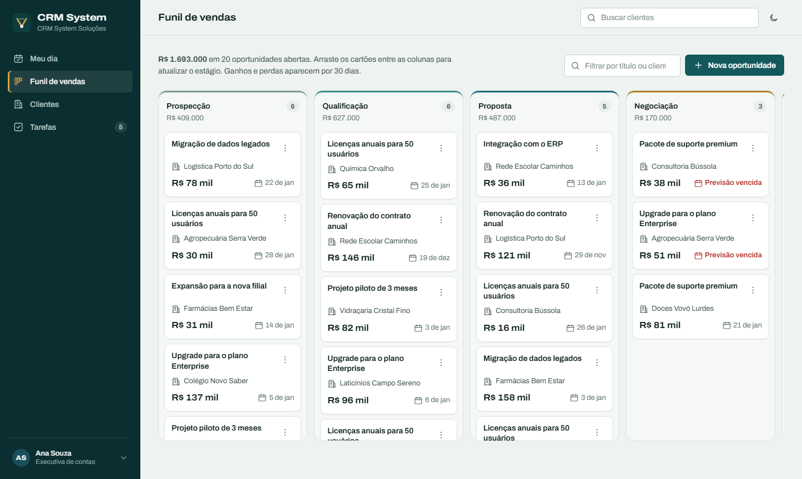

CRM System
Sistema de gestão comercial com área do colaborador e área do administrador.
Funil de vendas com arrastar e soltar, carteira de clientes, tarefas, meta do mês e um painel para o administrador acompanhar a equipe e a auditoria.
- Login validado no servidor, com sessão em cookie httpOnly, proteção CSRF e bloqueio por tentativas
- Banco SQLite nativo do Node.js e front-end sem framework nem build
- Base de demonstração gerada com dados 100% fictícios
Node.js, Express, SQLite e JavaScript
Ver o código do CRM System no GitHub